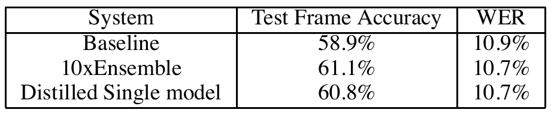

Train one student from the observed class.
For logits z, ordinary softmax at T = 1 gives q(1). Cross-entropy with one-hot label ey is . It says which class must win, but not how the other classes relate.
Model compression · teacher-student learning
A deployable student can learn not only which class wins, but how a cumbersome teacher ranks all the alternatives. Temperature makes that hidden structure trainable.
Ensembling separately trained models often improves predictions, but serving every member multiplies memory, latency, and computation. The paper separates the two jobs: use a cumbersome model to extract structure during training, then transfer its behavior into one student for deployment.
Suppose an image is a handwritten 2. A one-hot label says only “2 is correct.” A trained classifier might say “2 is very likely, 3 is more plausible than 7, and carrot is effectively impossible.” Those relative probabilities describe how the model generalizes around this example.
For logits z, ordinary softmax at T = 1 gives q(1). Cross-entropy with one-hot label ey is . It says which class must win, but not how the other classes relate.
The teacher's distribution gives a target for every class. The paper calls these “soft targets.” Their small non-winning probabilities carry the structure that a one-hot label discards.
Cross-entropy refresher. CE(target, prediction) averages the negative log probability assigned to outcomes, weighted by the target. With a one-hot target, only the correct class contributes. With a soft target, every class with nonzero teacher probability contributes.
| Symbol | Meaning | Shape |
|---|---|---|
| K | Number of output classes. | scalar |
| v | Fixed teacher logits for one input, before softmax. | ℝK |
| z | Trainable student's logits for the same input. | ℝK |
| p(T) | Teacher probabilities after dividing v by T. | ΔK-1 |
| q(T) | Student probabilities after dividing z by the same T. | ΔK-1 |
| y, ey | Observed class index and its one-hot vector. | y ∈ {1...K}; ey ∈ {0,1}K |
| T | Positive temperature. T = 1 is ordinary softmax; T > 1 softens the distribution. | scalar > 0 |
For a batch of B examples, the two logit arrays have shape B × K. Softmax runs across the K classes independently for each row. Every p(T) and q(T) row lies on the probability simplex ΔK-1: entries are nonnegative and sum to 1.
The paper's desired behavior comes first: the student should respond to each transfer example the way the teacher does, while labels—when available—keep learning pointed toward the correct answer. This becomes two cross-entropies computed from the same student logits.
Produce v, divide by T, and turn it into the soft target p(T). No gradient updates the teacher.
Produce z. Compare q(T) with the teacher and q(1) with the hard label. Only the student receives gradients.
A convenient notation for the combined objective is:
Here α simply names the relative weighting; the paper describes a weighted average rather than fixing this exact symbol. It generally reports lower weight on the hard objective, and explains why the soft-target gradient should be multiplied by T² when both terms are used.
Predict before moving the control: will increasing T change the class ranking, and will the gaps widen or narrow?
The same four scores are divided by T and normalized. Use the arrow keys when the slider has focus.
The ranking cannot change: division by the same positive T preserves logit order. The gaps narrow because the exponential ratios move toward 1. At T = 4, the distribution is about [0.423, 0.256, 0.200, 0.121].
Static reading. At T = 1 the probabilities are [0.839, 0.114, 0.042, 0.006]. At T = 4 they become [0.423, 0.256, 0.200, 0.121]. Temperature does not create similarity; it exposes relative logit differences already learned by the teacher.
Prediction check: if 10 is added to every teacher logit, does p(4) change?
No. Every numerator and the denominator are multiplied by , so the common factor cancels. Softmax depends on logit differences, not their absolute offset.
For cross-entropy from teacher target p(T) to student q(T), the derivative with respect to student logit zi is exactly:
One factor of 1/T appears directly from differentiating z/T. At high T, the difference q(T) - p(T) also shrinks roughly as 1/T. Together the gradient is approximately proportional to 1/T².
Keep teacher v = [4, 2, 1, -1] and use student z = [3, 2, 0, -1]. Then p(4) and q(4) are:
| Class | p(4) | q(4) | (q-p)/4 | 16 × gradient |
|---|---|---|---|---|
| A | 0.42276 | 0.38182 | -0.01024 | -0.16377 |
| B | 0.25642 | 0.29736 | +0.01024 | +0.16377 |
| C | 0.19970 | 0.18036 | -0.00484 | -0.07736 |
| D | 0.12112 | 0.14046 | +0.00484 | +0.07736 |
Multiplying the soft loss by T² = 16 makes its gradient -0.16377. The correction does not change the optimum of the soft term; it restores its scale relative to the hard term.
Sign check: under gradient descent, does the negative class-A gradient raise or lower zA?
It raises zA. Gradient descent subtracts the gradient, so subtracting a negative value increases the logit. That is appropriate because qA is below the teacher's pA.
If T is large compared with the logits, and teacher and student logits are separately centered so each set sums to zero, the paper approximates:
Centering v gives [2.5, 0.5, -0.5, -2.5]; centering z gives [2, 1, -1, -2]. Their difference z - v is [-0.5, +0.5, -0.5, +0.5]. At K = 4 and T = 20:
The exact class-A cross-entropy gradient at T = 20 is -0.0003354, already close to the approximation. In the high-temperature limit, minimizing soft-target cross-entropy therefore behaves like matching centered teacher and student logits with squared error.
The transfer set may be the original labeled set, another unlabeled set, or a mixture. On unlabeled examples only the soft path is available. If the teacher is an ensemble, its members' predictive distributions can be combined before forming soft targets.
Decision exercise: the teacher assigns only 0.38 to the true class and strongly prefers a wrong class. Should the student ignore the label and copy the teacher?
No. When the hard label is known, the hard-target term gives an independent correction. The relative weight must be selected on validation data; a wrong, biased, or poorly calibrated teacher can pass those failures to the student.
The speech experiment used an acoustic model with eight hidden layers of 2,560 rectified linear units, a 14,000-class softmax, about 85 million parameters, roughly 2,000 hours of English, and about 700 million training examples. Ten models with the same architecture were independently initialized; their averaged predictions formed the ensemble teacher. Distillation tried T ∈ {1, 2, 5, 10} and used relative hard-target cross-entropy weight 0.5.

Interpretation check: does 86.4% mean the student is 86.4% as accurate as the ensemble?
No. It is the fraction of the ensemble's improvement over the 58.9% baseline that the student recovered. The student's absolute frame accuracy is 60.8%.
Why can identical WER coexist with different frame accuracy?
Frame classification is the local acoustic objective, while WER is produced after decoding sequences with the HMM and language model. Different frame-level predictions can lead to the same rounded word error rate. The paper explicitly notes this objective mismatch.
A large regularized network made 67 test errors. A smaller 2 × 800-unit network made 146 when trained normally, but 74 when trained to match soft targets at T = 20.
With all training 3s omitted from the transfer set, the student made 206 errors, 133 on 1,010 test 3s. After a post-hoc +3.5 bias adjustment chosen on the test set, it made 109 total errors and only 14 on 3s. This is a striking probe, but the test-tuned correction is not a clean evaluation protocol.
On speech, hard targets with 3% of training data reached 67.3% train but only 44.5% test frame accuracy. Soft targets on that same 3% reached 65.4% train and 57.0% test, near the 58.9% full-data baseline.
The paper also explores 61 independently trained specialists for confusable JFT class subsets. Their combined predictions improve the generalist, but the authors explicitly say they had not yet shown that the specialist ensemble could be distilled back into one large model.
No. Too little softening hides alternatives; too much flattens distinctions. The paper reports intermediate T = 2.5 to 4 worked best for its radically small 30-unit MNIST student, while students with at least 300 units were similar above T = 8.
No. High T is a training device for the soft-target path. The trained student returns to T = 1 at inference.
No. Generic label smoothing assigns a fixed pattern around every label. Distillation supplies a different, input-dependent distribution from the teacher for each example.
No. This paper transfers output behavior—the pattern of class probabilities—not internal features or a proof that the two networks reason alike.
It omits the teacher's relative beliefs among non-target classes: which alternatives resemble the example and which are implausible.
They must be compared under the same scaling. Otherwise the distributions reflect different levels of softening rather than only teacher-student disagreement.
One comes directly from differentiating z/T. At high T, q(T) - p(T) contributes another approximate 1/T because both distributions move toward uniform.
It approximately restores the soft gradient's scale relative to the hard-label gradient as T changes; it does not alter the soft loss's optimum.
In the high-temperature limit, after teacher and student logits are separately zero-centered, the gradient is proportional to z - v.
The student alone at T = 1.
In the reported speech setup, one distilled model recovered 86.4% of the ten-model ensemble's frame-accuracy gain over baseline and matched its rounded WER.
Whether the teacher's mistakes, biases, and blind spots are transferred along with its useful class similarities.
Dropout can make one training network behave like an implicit ensemble; this paper then treats that cumbersome predictor as a teacher. SimCLR also uses temperature, but its softmax organizes positive and negative views, whereas distillation organizes a teacher's class alternatives. Lottery-ticket pruning changes the network's connectivity; distillation can instead train a differently shaped student by changing its targets.
DPO follows a parallel causal style but solves a different problem. DPO compares chosen and rejected sequences relative to a frozen reference policy. Distillation compares the student's full class distribution with a fixed teacher's distribution. Both can train an existing architecture through a changed objective; neither mechanism implies that teacher/reference errors disappear.
Native intuition: soften teacher and student by the same temperature, match the whole distribution, correct the soft gradient by T² when combining it with hard labels, then deploy only the student at T = 1. The gain comes from transferring how the teacher generalizes—not merely its top answer.